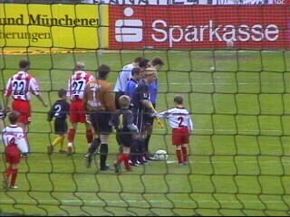

|
Alemannia Aachen - FSV Mainz 05 (3-0) 27 april 2003 |
Omdat Roda dit weekend niet in actie hoefde te
komen was dit een mooie gelegenheid om een
bezoek aan Alemannia Aachen te brengen.
Bier en worst volop verkrijgbaar.
De entreekaartjes voor Block M kostten €7,50
voor volwassenen en €6 voor Ramon ;-)
Het uiterst vernuftige bier-klik-systeem.
Bier en worst volop verkrijgbaar.
Het uiterst vernuftige bier-klik-systeem.
Doorkijkje op de tribune van de fanatieke fans.
Een afgeladen vol uitvak met uitzinnige fans van
FSV Mainz 05.
Het Kaalheide-gevoel in Block M.
Een doek gaat over het gastenvak.

Aachen in het donker, Mainz in rood-wit.
Eric van der Luer is aanvoerder bij Alemannia.
1-0 door Krontiris (31').
2-0 door Grlic (52').
Ook dat is het Kaalheide-gevoel....
3-0 door Ivanovic (74').